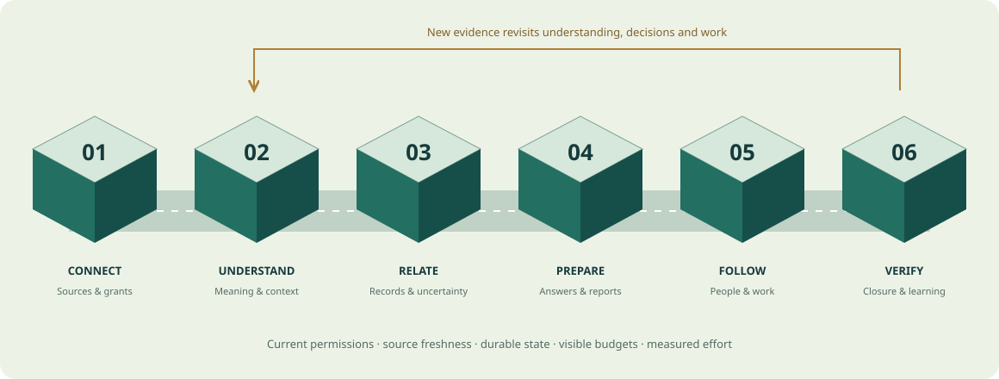

Meaning needed a mechanism
The build team challenged how the assistant links fragments, interprets files, carries corrections and constructs supported answers. These now have named mechanisms and tests.
A clear approach to the assistant you described—and a sprint plan that proves the experience.
Why the design changed, how fragmented conversations become reliable business state, and what must happen before we call the work done.
Design refinement · source audit still pending · earlier editions preservedImplementation-team feedback exposed an imbalance: controls were specified more precisely than conversation understanding. A second review against the original user vision exposed missing product demonstrations: normal work, direct commands, artifacts, acknowledgement routes and lifecycle recovery. The revisions connect these mechanisms to explicit sprint exits.
The build team challenged how the assistant links fragments, interprets files, carries corrections and constructs supported answers. These now have named mechanisms and tests.
The cross-check restored explicit demonstrations for normal work, owner voice/text commands, generated documents, authentication recovery and phone–desktop continuity.
Claude identified gaps; we challenged unsafe shortcuts such as automatic merges and “ready to pay” from receipt matching. Accepted changes are recorded below.
1.3 supersedes the delivery sequence and identified design choices in earlier editions. Unchanged 1.1 controls remain applicable. 1.2 implementation findings remain historical reported evidence, not newly verified code.
This is a design and delivery edition, not newly built product functionality. The other MacBook’s current source and runtime still need inspection.
12 design decisions shown
The six stations below refine the original factory’s responsibilities. They are modules and states—not six mandatory microservices. Corrections can revisit earlier stations after an episode is closed.

Scroll the diagram horizontally on smaller screens, or open the full visual.
Know what was observed and what may be missing.
Output: Durable source observations, not yet business facts
Recover meaning from fragmented text and media.
Output: Evidence-linked candidate interpretations
Maintain a changing account of the situation.
Output: Versioned records plus explicit uncertainty
Turn reliable state into useful assistance.
Output: Supported answer or authorized proposed effect
Make responsibility and progress durable.
Output: Acknowledged work with visible next steps
Close only when the outcome is supported.
Output: Verified outcome and measured effort
Stable ID plus versioned membership edges to evidence and typed records. Tasks reference specific records and task versions. Matching document keys retrieve candidates; they do not authorize merge. Split/merge keeps lineage and revalidates affected approvals.
Use reply chains, scoped identities and document identifiers first. Expand through bounded lexical, entity, time and semantic search where useful, including closed situations. Log search-or-skip reasons; audit skipped events independently. SQL candidates do not replace language interpretation.
Positive dependencies cover accepted records, calculations and consequential model-derived interpretations. Negative results retain selector scope and observation watermark. New matching evidence can invalidate a conclusion without correcting any earlier record.
Keep event time, source/document time, effective time and decision time distinct. Unknown dates remain unknown. A current instruction must not be silently dropped because no historical effective date was supplied; activation follows scoped instruction policy.
Evidence, interpretation, accepted state and authority remain distinct. Current grants and relevant source/effect/policy versions are checked at admission or execution. Re-review is necessary when those change; otherwise avoid redundant approval.
Needs attention, Work in progress, Ask GoFathom and What GoFathom knows remain proposed surfaces. Cards show evidence, uncertainty, recommended action and exact effect. Investigate first, route to the best-placed authorized person, batch nonurgent questions and expose aging.
The harness supplies context, model routing, schema-checked tools, budgets, checkpoints and validators. Code owns exact calculations, state transitions and durable waits. Tools create records or artifacts through authorized interfaces; raw source text never grants authority.
Separate case correction, scoped identity/alias, approved conversion or operating rule, and product/model changes. Do not silently generalize exceptions. Shared improvements require appropriate permission and minimization; no cross-tenant memory leakage.
Run tenant/matter isolation, revocation and source-filter tests before real data. Give untrusted parsers only scoped assets and restricted capabilities. Define credential recovery, retention/deletion of derivatives and caches, backup handling, and incident/restore ownership.
Phone/desktop responsive access and voice notes belong in the first useful experience. Cloud workers preserve durable state. Vision supports evidence with locators. Live voice, native bridges, browser workers and video receive workflow-specific entry gates; none is assumed reliable from a provider feature list.
First slice: one outlet, receipt/bill evidence, matches, discrepancies, follow-up and reports. No automatic payments, purchasing, supplier sends or external ledger writeback.
Later domain release with its own Gmail, privacy and legal-workflow tests. Early synthetic/consented fixtures check shared identity, revision and grant assumptions only.
Sprints are work packages, not guaranteed calendar intervals. Split oversized packages by user-visible outcome; estimate dates/staffing after S0. No performance or savings percentage is established.
Isolation before real data in S0. Acknowledgement trial and visible budgets in S1. Commands and one report inside S2. Legal foundation fixtures from S0. Fresh tests begin before familiar examples are perfected.
Trace one fresh intake through the real UI, worker and saved records; show the selected-source and permission boundary.
Owner: Engineering lead + business reviewer + product owner
When to pause or narrow: Block unsafe real-data intake or reliance; fix divergent app paths before treating diagnostic results as product proof.
One normal delivery and one ambiguous mixed-media delivery produce evidence-linked records or explicit uncertainty.
Owner: Application engineer + domain reviewer
When to pause or narrow: Restrict the affected capability if interpretation or clarification burden exceeds the agreed budget. Revise the route if it simply adds a second inbox.
Correct an outlet or quantity days later, ask for current status by voice/text and generate a corrected pending report.
Owner: Application engineer + independent QA
When to pause or narrow: Suspend affected outputs when a correction leaves unsupported statements, stale approvals or concealed dependencies.
Manager accepts a task, records a blocker, survives a restart, verifies closure and reopens it on contradictory evidence.
Owner: Workflow engineer + manager + QA
When to pause or narrow: Pause affected reliance on wrong-audience access, lost work, unsupported closure or adoption failure; repair before expansion.
Run protected fresh episodes and a bounded consented one-outlet shadow beside the existing process.
Owner: Engineering lead + independent evaluator + buyer
When to pause or narrow: Suspend affected reliance on critical failures or unsustainable effort; preserve results and diagnose. This does not mean stopping every unrelated development task.
This checklist prevents a narrow first workflow from erasing the broader product. “Later” is a deliberate sequencing decision, not a claim that the capability already works.
| Area | Decision | Reason |
|---|---|---|
| Existing TS/Postgres core | Retain after source verification | Evidence, exact calculations, owner decisions and replay are reported useful. New framework adoption must solve a measured gap. |
| Asakana + Sidekick patterns | Adapt to GoFathom | Familiar-channel capture, business terminology, scoped corrections, voice/media and focused clarification. Public product evidence does not establish their backend implementation. |
| Marble + Definite patterns | Adapt selectively | Separate receipt, invoice, stock and payment meanings; verify reconciliation. Do not duplicate the external accounting authority. |
| Glen + Hermes + Executor patterns | Reuse suitable components; build business controls | Task-specific context and portable tool/model boundaries. GoFathom still owns tenant grants, accepted state, evidence semantics and action policy. |
| Hue + Rystic patterns | Adapt evaluation methods | Protected scenarios, replay, independent outcomes and production failures becoming regression cases. Reviewer agreement is not an oracle. |
| Episode understanding + correction graph | Build over the existing domain core | Our differentiation: meaning across changing conversations, correct relationships and propagation into operational work. |
| Workflow engine / always-on VM per customer | Defer by default | Keep a bounded runner and isolated workers. Consider replacements when measured recovery, isolation, load or cost justifies them. |
| Native capture / browser / agent exchange | Later, gated | Maintain the product vision; add when the use case and authorization/recovery mechanism are proven. The full earlier 18-project mapping remains in the baseline. |
The full 18-project research comparison remains available in the preserved baseline. These are design influences; public demos and source reviews do not establish GoFathom runtime performance.
Persistent TS/Postgres records, restaurant calculations, owner decisions and replay are reported in the implementation history. Verify their current app integration.
Dropped instructions, numeric formatting, rejected-parent/child inconsistency, stale approvals, missing comparisons and identity/payment semantics remain source-audit leads.
Episode mechanisms, revised sprints and product demonstrations are design commitments. Publishing this page does not change their implementation status.
| Mechanism | Complexity assumption / practical limit |
|---|---|
| Indexed context | Approximately O(log N + K) for suitable balanced-tree indexes; broad filters can scan O(N). History and selectivity still matter. |
| Correction propagation | O(Va + Ea) traversal with visited-node tracking over affected derived records and edges; worst case can affect the full graph. |
| Media and storage | New-asset reading includes O(B) bytes. Extraction costs depend on actual modality. Retained revisions, assets and relationships drive storage. |
| Model and user cost | Measure intake, extraction, retrieval, answers, retries, support and human review. Token cost alone is not cost per completed workflow. |
N = indexed records; K = retrieved candidates; B = new asset bytes; Va/Ea = affected records/dependency edges. These are analytical assumptions, not measured speedups.
GOFATHOM PRODUCT, TECHNOLOGY AND SPRINT CROSS-CHECK Date: 2026-10-19 Scope: review of the latest proposal against the user's original requirements. Evidence: proposal, prior research and reported implementation history. Neither reviewer inspected or executed the other MacBook's current runtime in this review. CORE DIRECTION RETAINED Keep verified existing TypeScript/PostgreSQL components. Build context-sensitive interpretation, changing business state and persistent follow-through through the actual application. First outlet workflow covers receiving/bill evidence, ordinary matches, discrepancies, assignment, follow-up, closure and a pending report. Existing stock/accounting authority remains external unless explicitly changed. Do not expand this into a complete payable-approval system. ADDITIONS ACCEPTED 1. Decide and test the acknowledgement route before claiming end-to-end work. Default pilot candidate: enrolled manager on responsive GoFathom; scoped staff task view where enrolled. Manual manager relay is labelled and its effort counted. External sends and notifications require the appropriate effect boundary. Opening a message is not accepting a task. 2. Quiet normal-work processing alongside exceptions. Extraction and matching do not silently admit business facts outside policy. Preserve discoverability and appropriate sampled quality review. 3. Direct typed and voice-note commands in the first useful vertical slice. Interpret intent, scope, authority and effect; expose progress and cancel/failure state. Avoid redundant confirmation for expressly preauthorized low-risk effects, while consequential changes need the applicable review. 4. One generated report/PDF with template/input versions, provenance, private audience, hash and freshness/supersession. A downloaded file cannot be recalled; mark tracked artifact status and notify authorized recipients where configured, without pretending to revoke outside copies. 5. Account/connector recovery, staff departure, changed phone numbers/shared devices, revoked sessions and orphaned work. Reassignment is authorized, not automatic disclosure to a replacement. 6. Cross-device and reconnect behavior: durable request IDs, stale-version detection, queued/pending/synced/conflict states and current authorization at execution. 7. Visible tenant budgets, bounded retries and retrieval, queue aging and operator recovery. No silent dropping or automatic model fallback that violates data/capability policy. 8. Plain group/source transparency: explain what is read, who can see it, source limitations and recovery. Exact jurisdiction-specific legal obligations require a separate sourced review. 9. Small synthetic or consented legal architecture cases from the start: matter identity, separation and notice revision. These prevent restaurant-specific foundation assumptions; they are not a full legal-pack pilot gate. 10. Observe whether the product moves work to another inbox or causes relevant reporting to leave the selected sources. An absence of source messages does not establish absence of business events. RECOMMENDATIONS CHALLENGED A. No automatic episode merge merely because document numbers match. A PO may have several deliveries; invoice identifiers recur by supplier/year/business; a matter has multiple hearings. Scoped keys retrieve candidates. Relationship type, cardinality, temporal compatibility and conflicts govern linking. Merge/split lineage must revalidate affected tasks and approvals. B. No exact-key/reply-only access to closed episodes. A correction such as 'last week's issue was never resolved' needs bounded search by text, time and entities, potentially semantic retrieval. SQL candidate discovery does not replace interpretation. C. No provenance restricted to code outputs. Persisted interpretations used for tasks, approvals, answers, summaries or artifacts also need evidence and version dependencies. Track operationally consequential derivations, not every prose sentence or hidden reasoning step. D. No 'ready to pay' label from receipt matching. Payment eligibility requires separately defined authority, terms and checks. Keep reported payment, verified payment and unassessed eligibility distinct. E. No owner queue as automatic overflow destination. Retry within budget, expose aging, provide operational recovery, then ask a person only when their knowledge or authority is needed. F. No broad exact-key-only fallback presented as successful understanding. It may support a clearly restricted mode, but missed recall and unsupported cases remain measured and visible. G. No claim that retrieval cost depends only on open episodes. Index size, history distribution, media, query selectivity and correction fan-out also matter. H. No universal stop-all-development rule for every fresh failure. Suspend the affected reliance/release scope, preserve failures, diagnose and repair. Required critical checks still gate use. FINAL CLAUDE RESPONSE AND ADJUDICATION Claude accepted the seven challenged qualifications and withdrew the exact-key automatic-merge, closed-episode retrieval restriction, code-output-only dependency, receipt-match payment-readiness and unverified legal-duty prescriptions. It retained five sequencing objections and a budget-visibility timing point. Adopt these as follows: 1. S0 creates a source-pinned failure register. S1 must show each reproduced defect fixed through the app or explicitly deferred with impact and reason; no required capability can pass its gate while its blocking defect is deferred. The feedback calls these eight classes but groups several together, so the register must enumerate actual distinct defects rather than repeat an unverified count. Named reported defects include rule effective-time handling, numeric normalization, parent-child admission consistency, stale/repeated approval, missing deterministic comparisons, outlet/item/unit linking and gross/net/payable/payment semantics. 2. Run a low-fidelity manager acknowledgement trial in S1 or S2 before implementing the complete S3 work loop. Count manual relay and whether users feel they acquired a second inbox. The full S3 route is conditional on this evidence. 3. S0 records buyer relationship, stated value, named reviewer capacity and a priced pilot proposition or price hypothesis. Do not invent willingness to pay. Record graded demand evidence and revise at sprint exits; payment is not a prerequisite for bounded discovery. 4. Run cross-business/matter-scope denial, revocation, non-enrolled-content filtering and relevant parser isolation tests BEFORE real data enters. S4 broadens verification; it is not the first security gate. If S0 is not ready, use synthetic data. 5. Log decisions to search or skip historical/closed episodes, with concise operational reason codes, retrieval scope and outcomes. Audit skipped routes using independently labelled examples so the evaluation measures missed searches as well as bad results. Reason logs are not proof that a skip was correct. 6. Make budget exhaustion, pending work and queue age visible in S1. S4 load testing checks sustained behavior. REVISED SPRINT DEMONSTRATIONS S0: Pin source and real app entrypoints; reproduce known failures; establish grants/source boundaries, buyer/reviewer baseline and chosen communication route; prepare protected cases. Exit: clear reusable components, known blockers and truthful data access. Do not use real data before relevant authorization/isolation controls. S1: Process one routine and one ambiguous multimedia receiving case through the app. Fix relevant normalization, time, identity, parent/child admission and arithmetic defects; retain original evidence and proposed membership. Exit: source-grounded records and explicit uncertainty; fresh variations included. S2: Process a late outlet/quantity/document correction. Revisit affected records, tasks and answers. Demonstrate a typed/voice-note command and versioned pending report in the same app. Exit: corrected state, version-bound critical answers and stale/superseded artifact status without rewriting history. S3: Demonstrate the chosen real acknowledgement route, blockers, restart-safe timers, completion evidence, reopening, device consistency and offboarding recovery. Exit: actual uptake and correct state recovery, not merely rows created by a diagnostic script. S4: Run protected new cases and raw-context/summary/manual comparisons; measure security, restore, history growth, concurrency, cost and net effort; enter consented one-outlet shadow only after applicable gates. Exit: explicit bounded reliance decision and sustainable user/reviewer effort. This sprint label is a work package, not a promise that every activity fits a fixed calendar interval. Any sprint that exceeds a manageable implementation timebox is split by user-visible outcome, keeping prerequisite controls. Dates and staffing estimates follow the source audit. LATER, WITH EXPLICIT ENTRY CONDITIONS Ramya's Gmail/matter workflow after the core proves useful, with separate legal-domain evaluation. One authorized external effect after its own effect/reconciliation gate. Native installers, ambient desktop awareness, live conversational voice, video-specific workflows, browser execution, own collaborative chat and agent exchange follow demonstrated demand and their respective access/reliability gates. Responsive phone/desktop access, voice notes and essential recovery are not deferred with those larger features. PERFORMANCE AND COST CHECK Symbols: N indexed records, K retrieved candidates, B newly observed asset bytes, V_a affected derived records, E_a affected dependency edges. Intake work includes O(B) reading of new bytes plus index/storage operations. Normal balanced-tree lookup is approximately O(log N + K) under suitable indexes; broad filters may scan O(N). These are data-structure bounds, not measured application latency. Dependency traversal with visited-node deduplication is O(V_a + E_a) for the affected graph; worst-case changes can affect the full graph. Cycles need controlled handling and idempotent processing. Selective invalidation is a goal to measure, not an O(1) guarantee. Store source revisions, assets and dependency relationships with declared retention; storage is driven by retained bytes and relationships, not just message count. Deletion must address derivatives, indexes, caches and backups under a defined policy. Measure tokens and model time separately from database complexity. Track intake plus extraction plus retrieval plus answering plus retries, not just query cost. Benchmark realistic history lengths and tenant concurrency, including tail latency, queue lag, correction recall, memory/storage and reviewer minutes. Do not invent a performance improvement percentage. Vendor cash cost, customer human effort and combined cost remain separate; the subscription is not counted twice as combined resource cost. Add support/reconnect effort and failed/abandoned work to the business-value assessment. SUCCESS CRITERION Correctly maintain changing business understanding, perform useful authorized work and reduce total business effort. Agreement between models is design feedback; passing current-source tests and observed workflow outcomes supply implementation evidence.
The same single link now contains the full 1.1 blueprint, the unchanged historical 1.2 audit and this complete 1.3 refinement. Read the precedence note before comparing sprint plans.
The actual implementation remains on another MacBook. Reported capabilities and historical failures have not been independently rerun here. Model agreement is review feedback, not runtime verification. This edition publishes curated design decisions without private conversation transcripts or workstation paths.